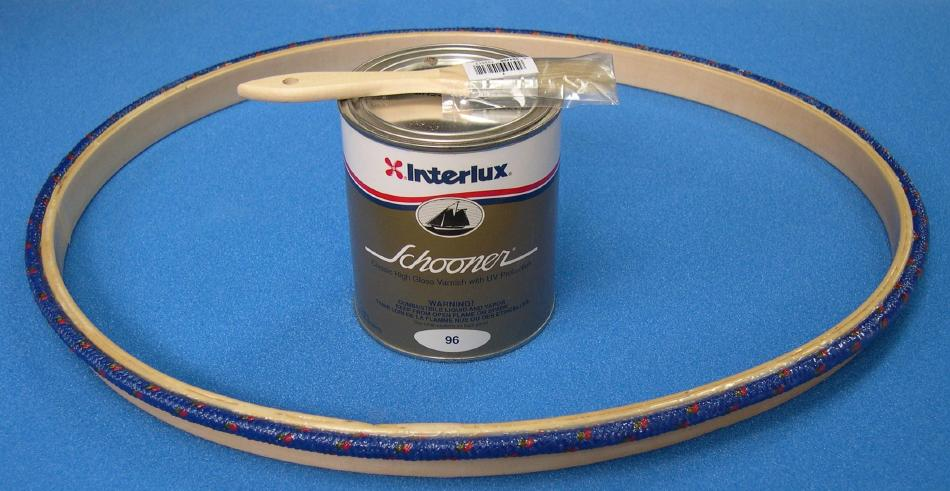

| Wood / Freestanding Coaming (8 of 8) | Menu Last Page Next Page |
|
 After the resin coating cures, apply a couple coats of varnish to complete the coaming. Epoxy resin must be wiped down with light sandpaper or a synthetic sanding pad and water to remove the buildup of amine blush prior to varnishing. Note: The LINK below describes the method of attaching the Wood / Freestanding Coaming to the skin. Use the (BACK) key to return. |
|